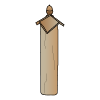
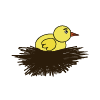

WAAROM NEST?
-
Iets over mijzelf.
Ik ben Renske en ik ben 19 jaar oud. Ik ben nieuwsgierig en ik ben een ontzettende dierenvriend. Goed voor onze planeet zorgen vind ik niet alleen belangrijk voor ons, maar ook voor onze medewezens op aarde.
-

Waarom kies ik Nest?
Ik kies Nest, omdat ik het een leuk en ontzettend goed initiatief vind van Stadshout om van de gekapte bomen een paal te maken voor dieren. Het helpt niet alleen met het vergroenen van Amsterdam, maar ook om de dieren in Amsterdam meer leefruimte te geven.
-

Waarom is Nest belangrijk?
Nest is belangrijk, omdat veel dieren in Amsterdam geen goede slaapplekken hebben of geen goede plekken hebben waar ze een nestje kunnen maken. Doordat de oude bomen gepakt moesten worden hadden de dieren in die bomen geen plek meer. Daarom zijn de Nestpalen een super goed initiatief voor de dieren en ze zo een nieuw thuis te kunnen geven.